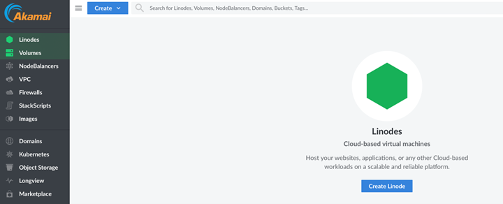
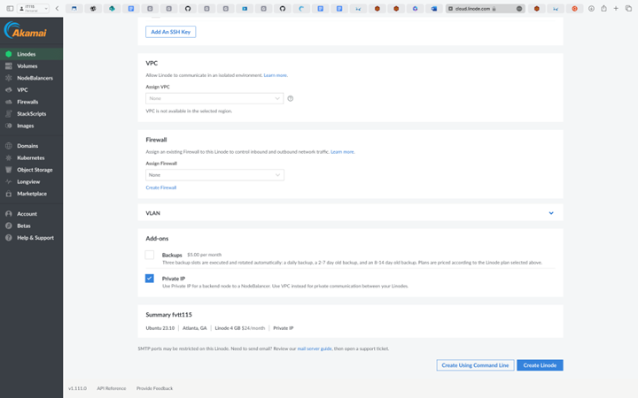
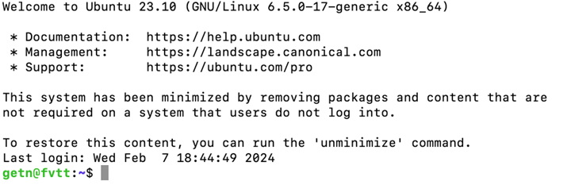
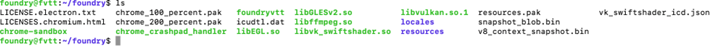
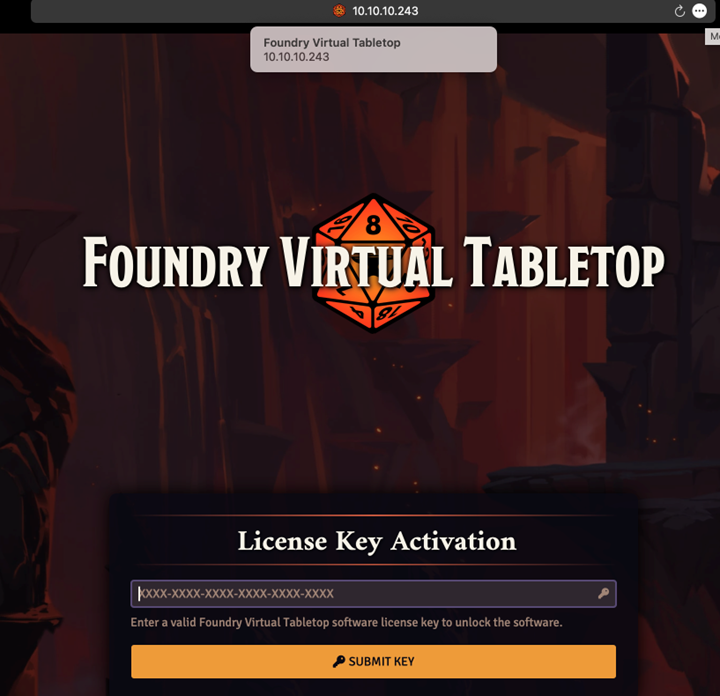
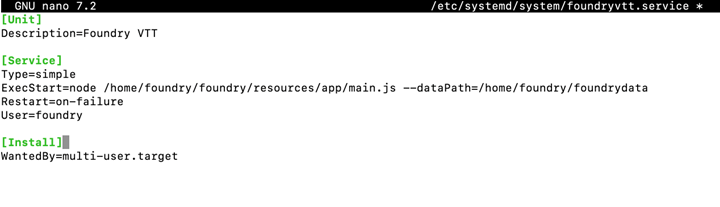
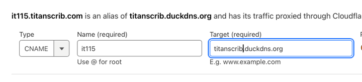
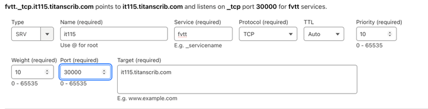
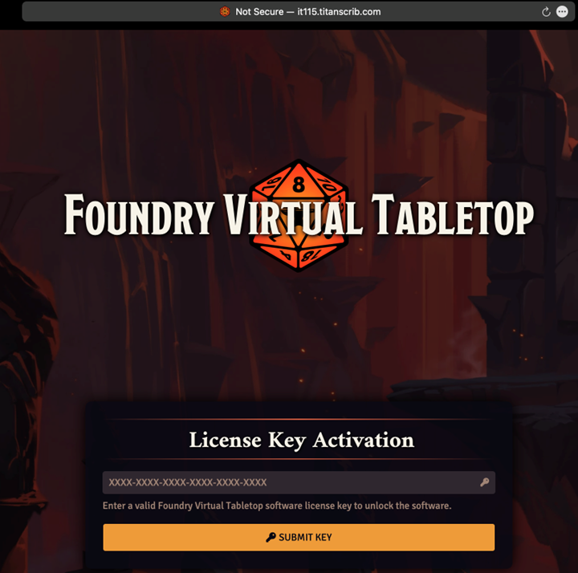

Instructions
Today we’re going to be setting up a “Foundry Virtual Tabletop” Server on a cloud hosted platform. I’ll stay generic when it comes to cloud providers as there are differences between providers, but the basics remain the same. I'll be using Linode today as it seems to be one of the more basic providers while providing a static IP address. (If you don’t have the option of a static IP, I will address this as well.) This tutorial will assume you already have an account with the Foundry website and have purchased a license and are thus familiar with the website https://www.foundryvtt.com/.
To start with, we will need an account with the provider of your choice. Once an account has been created, you should be greeted with a screen like the one here.
We’ll create a new virtual machine (called a ‘linode’ here) and we want to select the options that make most sense for what we will be doing. FVTT recommends 2 cpu cores and 4GB of RAM, so we’ll select those as our options and Ubuntu 23.10 for our OS. If given the option to use a private IP, select it now, as it cuts out a step later in the writeup. From here, most of the work will be done via command line, so set your connection up to your new virtual machine as you see fit. I recommend connecting via SSH.
Most cloud providers will create your vm using a template, so the installation will likely have been completed, however, if you are installing the OS on “bare” hardware, you will need to go through the installation steps at this point. Make sure to enable openssh server so that you will be able to connect to your machine via SSH.
Once we’re greeted with this screen, it will be time to do a little housekeeping.
Using the package manager APT, we will update the system to the most up to date packages to keep the system secure and stable. My system is already up to date, but the following commands are all that are needed to update ubuntu.
sudo apt update | sudo apt upgrade –yBecause we want to run this as a separate service, we want to run this under an unattended account. To do this, we will need to create a new user account, and give it sudo permissions.
sudo adduser foundrysudo usermod -aG sudo foundryYou will need to give the new account a password. Make sure that it is different from your first user account. This server is exposed to the internet, so don’t skimp on security. Now switch over to the new account so we can get to installing your new server!
su - foundryThe only extra resource we need (unless you need a dynamic DNS. For that, you can follow this linked guide.) is a repository that doesn't come with ubuntu by default. the node repository will need to be installed using the following code. *editor's note: unzip and nano are not always installed by default. The code to install node has been adjusted to also install unzip and nano.
sudo apt install -y ca-certificates curl gnupgsudo mkdir -p /etc/apt/keyringscurl -fsSL https://deb.nodesource.com/gpgkey/nodesource-repo.gpg.key | sudo gpg --dearmor -o /etc/apt/keyrings/nodesource.gpgecho "deb [signed-by=/etc/apt/keyrings/nodesource.gpg] https://deb.nodesource.com/node_20.x nodistro main" | sudo tee /etc/apt/sources.list.d/nodesource.list
Now that that is done, we can update again and see that the repo has now been added to the list of available repos that APT can use.
sudo apt updateNow that we have access to the node repo, we can install NodeJS itself. *as well as unzip and nano*
sudo apt install nodejs unzip nano -yVerify that node is successfully installed.
node --versionNow that we have the building blocks, it’s time to build. Start by creating the folders we’ll use for foundry to be stored in.
cd ~ | mdkir foundry foundryuserdataMove into the foundry folder using the “change directory” command or cd.
cd foundryThis next section is timed, so be ready to be somewhat quick. In your web browser, navigate to the Foundry website, and head to your licenses page once logged into your account. As we are using Linux make sure that you select that option in the appropriate drop down, and select the “Timed URL” option, otherwise you’ll need to use rsync to move files between machines. Once clicked, your link will be copied to your clipboard. (A terrifying prospect for mac users. 😉) The link will stay live for 5 minutes before expiring. Paste your link to a note as you’ll need to wrap that link in the code below before pasting it all into your terminal.
wget --output-document ~/foundry/foundryvtt.zip "<download url>"Make sure the link has the quotations around it. It won't work without them. If done successfully your folder should now have a .zip file in it. Now we can expand the zip file into the directory and remove the zip file.
unzip ~/foundry/foundryvtt.zip -d ~/foundry/ | rm foundryvtt.zipThe list command should now show that your directory has several files and directories in it.
Congrats! Foundry is now installed! There’s a bit more work to do to be able to use it though. Moving back to the home directory using the cd command again, we should test everything to make sure it functions.
node foundry/resources/app/main.js --dataPath=/home/foundry/foundryuserdataAs long as there are no errors, you will be able to point a webbrowser to your IP address with a port of 30000 and access the interface.
(A side note: If you aren’t familiar with IP/port schema, it is address:port ex:10.10.10.243:30000) Unfortunately, this isn’t persistent, so let’s use systemd to make it so. In your terminal exit the running process using ‘ctrl + c’ keys. You’ll be dropped back into the home directory. Now we’re going to create a new file within systemd that will manage the service and keep it running perpetually. Using nano, we will create a new file within systemd named foundryvtt.service. You'll be greeted with a small window to create our new file.
sudo nano /etc/systemd/system/foundryvtt.service[Unit]
Description=Foundry VTT
[Service]
Type=simple
ExecStart=node /home/foundry/foundry/resources/app/main.js --dataPath=/home/foundry/foundrydata
Restart=on-failure
User=foundry
[Install]
WantedBy=multi-user.targetThe screen should look something like this.
Save this pressing ctrl + x, y, then enter. Now we can just enable the service, and restart systemd with the following commands.
sudo systemctl daemon-reload
sudo systemctl start foundryvtt
sudo systemctl enable foundryvttYour service is now persistent! Now do you really want your friends to go to an IP address every single time you want to play a game? If you have a custom domain, you don’t have to. For this part, I will assume that you already have a domain set up and configured so if not, please do so now.
In your DNS settings where your domain name is registered, you will want to create a new CNAME record if you’re using DDNS, or an A/AAAA record if you have a private IP address. For a CNAME, you will want to point the subdomain to the ddns you are using as shown here.
For a private IP, you can use your IP address obtained from your cloud host as the target, however you’ll need to add an additional step in the form of an SRV record to point directly to the correct port.
If you have multiple SRV records, you will want to address the weight and priority as needed.
Once DNS has been set up, you're all finished!
This tutorial will get you set up with the basics. Other security features such as SSL and configuration are outside the scope of this tutorial. Have fun and keep gaming!